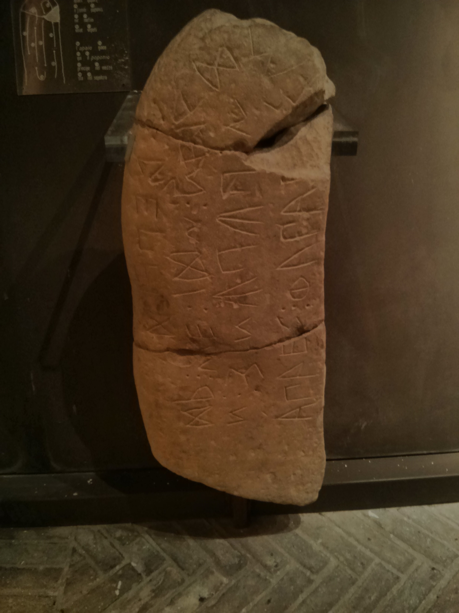

雑記 — 2024年
- 新年の挨拶など [2024/1/1]
- вести と везти について [2024/1/12]
- 今年度取って良かった授業 [2024/2/9]
- 学部 3 年 S セメスターの回顧 [2024/8/9]
- 見沼通船堀閘門開閉実演の日の Vlog [2024/8/28]
新年の挨拶など [2024/1/1]
明けましておめでとうございます．今年も宜しくお願いいたします．ただでさえ短く寛げない冬休みですが，イタリック諸語の授業の講読の予習の為，正月早々に南ピーケーヌム語 ([英] South Picene) の碑文を読む羽目になっております．オスク語もそうでしたが (ウンブリア語なんかもそうなのでしょうが)，一つの文字 (特に母音) が複数の音に対応する為，語源を調べないと何と読むのか分からないことが多くて大変ですね．何はともあれ，今年も精進して参ります．

南ピーケーヌム語はイタリック諸語に属する言語で，碑文でしか残されていません．例えば右の図はそのような碑文の一つです．イタリアの Macerata 県 Loro Piceno で出土した石碑で，MC 1 と呼ばれるものです．南ピーケーヌム語式アルファベットで書かれていますが，左下に nír ([neːr] と発音されたものと思われます) という語が見えます．これは印欧祖語の *h2nēr「男」(Gr. ἀνήρ) に遡る語です．ラテン語には本来語としては残されていませんが，借用語としてはローマ皇帝 Nero の名に残されています．しかし，南ピーケーヌム語 (をはじめとするサベッリア諸語) には本来語として残されているのですね．
碑文はとても読みにくいですが，有難いことに研究者がラテン文字に転写したものが既にあるので，私はそちらの方を参照しています．具体的には Zamponi の South Picene (Routledge World Languages, 2021) や Rix の Sabellische Texte (Handbuch der italischen Dialekte, 5. Bd., 2002) などです．
新年は何かを始めるにはちょうど良い機会なので，去年 (今年度) は古典ギリシア語をそれなりに真面目に勉強したわけですし，古典ギリシア語で綴られた文章を少しずつ読んでいきたいと思いました．何を読むかという話ですが，矢張り注釈があった方が良いので注釈が簡単に手に入るものが良いので，Geoffrey Steadman という方がホームページで注釈を公開している作品から選ぶことにしました (尤もこの方の注釈には誤りが少なからずあるそうですが)．この中であれば，取り敢えずは何でも良いので，私の関心に基づいてプラトーン ([希] Πλάτων) の『パイドーン Φαίδων』にしました．ソークラテース ([希] Σωκράτης) の死刑執行直前 (及び死刑執行の様子) を描いた対話篇で，プラトーンの著作の中でも有名な部類に入るものですね．
実際に読むに当たって，差し当たり前述の注釈書さえあれば或る程度は読めますが，それに加えて役に立つであろうツールが幾つかあるので紹介します．ラテン語・古典ギリシア語に関しては Loeb 古典叢書の英語対訳が有名ですが，著作権が既に切れているものに関しては Loebolus という Web サイトや，Internet Archive で閲覧することが出来ます*2．John Burnet による Oxford 古典叢書のテクストも Internet Archive で閲覧することが出来ます．それから，Perseus Digital Library の Scaife Viewer というサービスでは各々の語の形態などの語釈や英訳を見ることが出来ます．同じく Perseus でギリシア語の単語の検索も出来ます．
先ほど Scaife Viewer を眺めていて知りましたが，Σωκρατέω 'do like Socrates, "Socratize"' という動詞があるのですね (Perseus)．アリストパネース ([希] Ἀριστοφάνης) の『鳥 Ὄρνιθες』という喜劇で使われているそうです．
こんな調子で，取り敢えず一日に一文以上という約束で読んでいきたいと思います．いつ読み終わるのか (抑も読み終わるまで続けられるのか) 分かりませんが，続けられるだけ続けます．
注
*1 Accurimbono, Museo archeologico nazionale delle Marche, CC BY-SA 3.0, via Wikimedia Commons *2 実はデジタル版 Loeb 古典叢書というものもあるそうだが，残念ながら東京大学は購読していないらしい．すれば良いのに！{kind=link}
вести と везти について [2024/1/12]
ロシア語の動詞 вести「連れて行く」と везти「運ぶ」は非常に似ており，混同してしまいがちである．更に悪いことに вести は不規則現在語幹 вед- を持つと来ている．しかしこれらの語の語源を知れば幾らか覚えやすくなるのではないだろうか．
先ず вести であるが，一気に印欧祖語まで遡ってしまうことにすると，この動詞は印欧祖語の *u̯edh- 'to lead' という語根に由来している．本来印欧祖語は動詞の不定形を持たなかったとされているが，娘言語の多くは不定形を持っており，その中でも幾つか言語に於ける不定形は究極的には *-tu- という接尾辞 (に更に他の要素が付いたもの) に由来している．ロシア語の -ть/-ти もその一例である．従ってロシア語の вести は *u̯edh-tu- に起源を持っているということになる．印欧祖語は，歯閉鎖音が連続した場合に，その間に歯擦音を挿入するという変化を被った．斯くして現れた 歯閉鎖音-歯擦音-歯閉鎖音 の子音連結は多くの言語で簡略化されており，バルト・スラヴ語派では -st- に変化している．この辺りの知識があれば，*u̯edh-tu- が вести に変化したことは (印欧祖語からロシア語に至るまでの詳細な音韻変化などは無視しているが) 納得出来るだろう．вести の -ст- という子音連結は不定形を形成したときに現れる歯閉鎖音の連続が変化したものであるので不定形にしか現れず，現在語幹には元の вед- が現れる．
因みに英語の wed「結婚させる」という動詞 (cf. wedding) も вести と同根 (即ち，印欧祖語の *u̯edh- が由来) である．*u̯edh- の本来の意味は前述の通り 'to lead' であるが，この語根は婚約に関する意味も持っていたらしく，Kroonen は "The Indo-Europeans were culturally exogamous (on the female side), which implied that the bride was led away from her father's to her new husband's family" と述べている (Kroonen, 2013, p. 564)．
続いて везти であるが，これは印欧祖語の語根 *u̯eǵh- 'to carry' に由来している．印欧祖語は *ḱ, *ǵ, *ǵh という一連の子音を持っており，これらの子音は各々の娘言語に於いて大きく分けて 1. k, g 系の子音 (軟口蓋音) のまま保たれた; 2. s, z 系の子音 (歯擦音) に変化した (口蓋化) という二通りの音韻変化を見せた．印欧語族の言語のうち，1. の変化をした言語群を centum 語群，2. の変化をした言語群を satem 語群と呼んでいる．centum, satem はそれぞれラテン語，サンスクリット語で「百」を意味する語であり，ラテン語は centum 語群に含まれ，サンスクリット語は satem 語群に含まれる．スラヴ語は satem 語群に含まれ，上述の三音素は (概ね) *ḱ > s; *ǵ, *ǵh > z という変化をしている．英語 (centum 語群に含まれる) の know とロシア語の знать は実は同根であるが，ここに現れる k と z の対応もこの口蓋化に因るものである．閑話休題，везти に話を戻そう．satem 語族の口蓋化を考えれば，印欧祖語の *u̯eǵh- という語根がロシア語の везти という動詞を与えたということが (再びここでも詳細な音韻変化は無視しているが) 分かるだろう．вести の с と違い，везти の з は特別な変化で現れたものではない為，現在語幹 вез- でも保たれている．
印欧祖語の *u̯eǵh- という語根は，英語の way やドイツ語の Weg などの語源でもある．ドイツ語の Weg は *u̯eǵh- と非常に類似していて分かりやすい (とは言え，当然ながら印欧祖語から現代ドイツ語に至るまで恒常的にこの語形であった訳ではないのだが......) が，英語は直ぐには分かりにくいかも知れない．語末が y になっているのは古英語期に於ける口蓋化に起因している．way は古英語では weg と綴られていたが，この g は先行する e の影響で口蓋化と呼ばれる音韻変化を被り [j] の音で発音されていた．現代英語の綴りは，この発音が反映されている．このような g > y [j] の変化の例はかなり多く，例えば garden と yard という二重語が存在するのもこの影響である．yard (古英語での綴りは geard) は英語固有の語であり，語頭の g が口蓋化を被っている．他方で garden は同じくゲルマン語由来であるが，この語はアングロ・ノルマン語を経由してノルマン・コンクエストの時に英語に齎された語であるので，古英語期の口蓋化を被っておらず，本来の g が保たれている．
参考文献
Beekes, R. S. P., Comparative Indo-European Linguistics (2nd ed.),Amsterdam: John Benjamins, 2011
Derksen, R., Etymological Dictionary of the Slavic Inherited Lexicon, Leiden: Brill, 2008, IA
Kroonen, G., Etymological Dictionary of Proto-Germanic, Leiden: Brill, 2013
Черных, П. Я., Историко-этимологический словарь современного русского языка, Москва: Издательство «Русский язык», 1999, IA (3-е изд.), etymolog.ruslang.ru
Online Etymology Dictionary
今年度取って良かった授業 [2024/2/9]
本日 A セメスターの試験が全て終了し，漸く春休みが始まりました．今学期は授業を詰め込み過ぎてしまい，毎週毎週「今週を乗り切れば......」と言っていたものの，結局最後まで暇になる事なく来てしまいました．丁度良い区切りの時期なので，今年度を振り返って，個人的に履修して良かったと思う授業を紹介します．
外国文学 — フランス文学のエチュード (前期教養，S セメスター，水曜二限，授業カタログ)
その名の通り，フランス文学に関する授業です．文学部フランス語フランス文学研究室の先生がオムニバス形式で四回ずつ話をします．それぞれの先生が好きなように (勿論前期教養の学生向けに色々と配慮しているのでしょうが) 話すという授業です．その為，話している先生方も楽しそうなのが聞いているこちら側にも伝わってきました．私は元々フランス文学というものに対して ——食わず嫌いのようなものですが—— 苦手意識が (今もそうですが) あって ，それでも面白い話があるなら聞こうじゃないかというとても生意気な気持ちで受講したのですが，見事に面白かったですね．屢々言われることですが，矢張り「先達はあらまほしき事」ですね．
課題としてこの授業では学期末に一つレポートを書き，それを採点してもらう先生は三人のうちから自由に選べるというものでした．受講する前には私は中盤の四回を担当される王子先生のフランスの政治思想の話題を最も楽しみにしていたのでこれに関してレポートを書くつもりでおり，実際に王子先生の授業はとても興味深かったのですが，その後の浜永先生の詩の授業が想定を遥かに上回る面白さだったので，結局期末レポートは Rimbaud の《酔い痴れた船》Le Bateau ivre という詩に関するレポートを提出しました．
古典語初級 (ギリシア語) I, II (前期教養，通年，金曜五限，授業カタログ前半，後半)
これも授業名の通り，古典ギリシア語の授業です．一年かけて古典ギリシア語の初級文法を習得することを目指しており，受講し終えた頃には，辞書を使いながらゆっくりではありますが，プラトーンの著作や新約聖書などが読めるようになります．ギリシア語は兎に角暗記するべきことが膨大 (名詞の曲用，動詞の活用，統語論の諸々，......) なので，強制力が働く授業という形で学べるのは，私にとっては有り難かったです．毎回希文和訳 (偶に和訳希訳) の課題が出るので，それをこなすのが幾分か大変ではありますが，良い勉強になるので大変助かります．それらの文章も，多くが古代ギリシアの文学・哲学や旧約・新約聖書などから採られたものである為，それらを実際に読めた時の嬉しさもまた大きいです．
この授業の (私が個人的に考える) 最も良い点は，担当の先生がギリシア語の歴史言語学の専門家なので，通時的な説明が非常に充実しているという点です．ギリシア語の諸々の屈折では不規則に見えるものが少なからず登場しますが，それらに関する説明が (通常の初級文法書などに比べて遥かに) 充実していますし，質問すれば詳しく答えてもらえます．私はこの方面に興味を持っている人間なので，非常に嬉しかったです．
特殊講義 II [イタリア地中海研究コース] (後期教養，A セメスター，金曜四限，授業カタログ)
この授業はイタリック諸語 (Italic languages) に関する授業で，古期ラテン語 (Old Latin)・オスク語 (Oscan)・南ピーケーヌム語 (South Picene) を扱いました．それぞれの言語に関して，数回の講義で文法を教わった後に実際のテクストの講読をするという形式の授業です．テクストとしては，古期ラテン語は Cato の『農業論』De Agricultura とサトリクムの石 (Lapis Satricanus)，オスク語はバンティア表法 (Tabula Bantina)，南ピーケーヌム語は幾つかの碑文 (AQ.2, MC.2, MC.1, TE.2, TE.4, AP.1, AP.2, TE.5) を読みました．文法の回では印欧祖語からの変化が解説され，講読の際にはそのテクストに現れる単語の意味や形態は勿論のこと，どのような歴史的経緯によってそのような形になっているのかという説明を求められます．殆ど全ての単語に関して (場合によっては複数の) 語源辞典を引いたり適当な文法書を調べなければならなかったので，今年度の授業ではこの授業が一番重かったと思いますが，非常に良い勉強になりました．今年度受けた授業の中で一番面白かったと思います．
学部 3 年 S セメスターの回顧 [2024/8/9]
ついこの間 B3 になって愈々数学科の必修が増えてきたなと思っていたら，あれよあれよという間に年度の半分が終わってしまった．今学期は忙殺されていたので特に何かをしたという感覚が余り無かったが，取り敢えず覚えている限りのことを振り返る．
授業
今学期の時間割は以下の通り (リンク先は授業カタログ; 丸括弧は履修無しの聴講，角括弧は自主ゼミ等):
| 月 | 火 | 水 | 木 | 金 | |
|---|---|---|---|---|---|
| 1 | 幾何学 I | 代数学 I | 複素解析学 II | 解析学 IV | |
| 2 | 幾何学 I | 代数学 I(表象文化基礎論演習) | 複素解析学 II | 解析学 IV | 西洋古典学演習 I |
| 3 | 幾何学特別演習 I | 代数学特別演習 I | 複素解析学特別演習 | 解析学特別演習 I | |
| 4 | (整数論) | イタリア地中海都市文化論 | |||
| 5 | 共通ラテン語 (6) | [カラマーゾフの兄弟] | [古典アルメニア語] |
数学科の講義には (珍しく？) 概ね出席していたと思うが，火曜の代数学は，既に殆ど知っている内容だったことと，同時に開講されている表象文化基礎論演習という授業が面白そうだったのでこちらに参加していた．この授業は (近代文学の代表的な作家とされている所の？) ドストエフスキーの『悪霊』を題材にして近代という時代について考えるという授業で，大変興味深かった．数学科の必修では複素解析が Ahlfors の後半部分を扱っているような感じで，初めて知る内容もそれなりにあって結構面白かった．(とはいえ，3 年の必修の他の科目がそれなりに基礎的なことを扱っているのに比べて複素解析の内容は聊かマニアックすぎるようにも思えるのだが，どうなのだろうか......)
必修以外に取った数学の授業は木曜 4 限の整数論だけで，この授業は (pro-)étale cohomology を扱っていた．前半が通常の étale cohomology に関する内容で，後半が pro-étale cohomology に関する内容という構成で，容易に想像出来る通りかなり詰め込まれている授業だったが，大まかな流れを知れたのは良かった (勿論いつかは Bhatt–Scholze あたりを真面目に読まないといけないのだろうが......)．Pro-étale を考える時の技術的な議論が割と面白かった (例えば構成可能位相が使われているのを初めて見た)．
金曜日は数学科の必修が無かったので好きなように時間割を組んだ．2 限の西洋古典学演習 I は文学部の講義なので，この時だけ本郷キャンパスに行った．(ところで文学部 3 号館は各階が凄まじい量の書籍を所蔵しているにも拘らず足の部分が何故か細くなっていて，見る度に心配になってしまう．地震などでポッキリ折れてしまわないのだろうか．まあ杞憂なのだろうが．) この授業はアリストパネース (Ἀριστοφάνης) の『雲 Νεφέλαι』の講読の授業で，私は完全に門外漢且つ初学者なので頗る肩身が狭かったが，色々と学ぶことが多かったので参加して良かった．来学期も必修と被ったりしていなければ参加したいと思っている．
アリストパネースというのは (ご存知の方も多いだろうが一応説明しておくと) 古代ギリシアの著名な喜劇作家で，11 編もの作品が現存している．恐らく最も有名な作品が今回扱った『雲』で，これは多分劇そのものというよりも寧ろプラトーン (Πλάτων) の『ソークラテースの弁明 Ἀπολογία Σωκράτους』で (暗に) 言及されるということで広く知られているかも知れない (ソークラテースに対して所謂「欠席裁判」を起こしている「旧い弾劾者」[18c–d])．プラトーンの描く所ではアリストパネースの劇はソークラテースを酷く誹謗中傷しているようにも読めるが，実際の『雲』はソークラテース本人を謗っているというよりは寧ろ当時のアテーナイで幅を利かせていたソフィストの姿をソークラテースに (不当にも) 投影して揶揄しているという風である．とはいえこの劇がアテーナイ市民のソークラテースに対する印象を悪からしめたということも十分あり得るように思える (し，プラトーンを信じれば，実際にそうだったのだろう)．或いはアリストパネースは同じくプラトーンの『饗宴 Συμπόσιον』で愛 (ἔρως) の起源として両性具有者説，即ち，元来人間は両性具有者 (ἀνδρόγυνος) であったが，或る時ゼウスの怒りを買って半分に切り分けられ，片方が男，もう片方が女になったという説を唱えた者としても有名かも知れない．
プラトーンを通しての偏ったアリストパネースの紹介が長くなってしまったが，いずれにせよ彼は喜劇を通して色々なものを風刺しまくった人で，『雲』ではソークラテース (に投影された当時のソフィスト) が標的にされたという訳である．一般に悲劇に比べて喜劇はハイコンテクストであると言われるが，アリストパネースの喜劇も例に漏れずその通りで，簡単な解説があれば分かるものから原文を見てみないと中々分からないものまであって結構難しい．例えば『雲』の一節
は如何にも下品なウケを狙った文だということは読めば即座に分かるが，実際はそれだけではなくて，原文はアナパイストス調 (ἀνάπαιστος) という悲劇の韻律が用いられている*1．即ち当時のギリシア人にとっては如何にも悲劇的な韻律で極めてくだらないことを歌っているという面白さがあったのだが，斯様なことは中々翻訳しにくい．καὶ τὰς πλευρὰς δαρδάπτουσιν
καὶ τὴν ψυχὴν ἐκπίνουσιν
καὶ τοὺς ὄρχεις ἐξέλκουσιν
καὶ τὸν πρωκτὸν διορύττουσιν,
(南京虫が) そうして脇腹を二つに断ち，
そうして命の水を吸い出し，
そうして二つの玉をば引き摺り出し，
そうして尻をば掘り通し，アリストパネース『雲』岩波文庫 (高津訳) 711–714，括弧内の補足は引用者．
イタリア地中海都市文化論という授業は教養学部の授業なので，金曜日は本郷から駒場へ移動しなければならなかった．古代ギリシア (特にアテーナイ) の文化を概観するという趣旨の授業で，西洋古典学などで当然の如く前提とされる知識を纏めて教わる機会があるのはとても有り難かった．面白かったし勉強になった．
自主ゼミなど
今学期はロシア語選択の友人と一緒にドストエフスキー (Фёдор Михаилович Достоевкий) の『カラマーゾフの兄弟 Братья Карамазовы』を読むという自主ゼミを行った (詳細は当該頁を参照)．最初から読んでいると少々辛いので，いいとこ取りということで「大審問官 Великий Инквизитор」という章のみを読んだ．読んだことがある方はお分かりだと思うが，『カラマーゾフの兄弟』のうちの (或いはドストエフスキーの？) 一つの頂点とも言える章である．この章だけでも読み応えがあるので，全編を通読するのが大変だという方は先ず大審問官のみを読んでみては如何だろうか．青空文庫でも中山省三郎による邦訳が読める．
金曜 5 限の古典アルメニア語の読書会は去年の A セメスターから参加しているもので，アルメニア語の先生が主催されているものである．今まではずっとステパノス・オルベリアン (Ստեփանոս Օրբելեան) の『シュニク地方の歴史 Պատմութիւն նահանգին Սիսական 』を読んでいたが，ついこの間からナレクのグリゴル (Գրիգոր Նարեկացի) の『雅歌注解 Մեկնութիւն երգոց երգոյն Սողոմոնի』を読み始めた．後者は文が一々統語的に込み入っていて中々読みにくい．ナレクのグリゴルというのは 10 世紀頃のアルメニア使徒教会の聖人で，2015 年にはカトリック教会から教会博士の称号も贈られている．勿論『雅歌注解』は旧約聖書の『雅歌』に対する注釈で，神学的な著作だが，ナレクのグリゴルは自身でも詩作をしていたらしく，その中でも特に『悲しみの書 Մատեան ողբերգութեան』(定訳があるのか分からない．ご存知の方はご教授願いたい) が代表作とされているそうだ．因みに同書から採った 4 篇の詩のロシア語訳でかのアリフレート・シュニトケ (Альфред Гарриевич Шниттке) が合唱協奏曲を書いている．彼の交響曲第 1 番のような作品からは想像も付かないような神秘的で美しい作品なので，シュニトケが好きではない方も是非聴いてみていただきたい．YouTube でヴァレリー・ポリャンスキー (Валерий Кузьмич Полянский) とロシア国立シンフォニック・カペラによる演奏がスコア付きで聴ける．
(主に) 日曜日の夜には Dzhafarov–Mummert の Reverse Mathematics を読む自主ゼミを (春休みからの続きとして) 行っていた (詳細は当該頁を参照)．逆数学と言っても，まだ本格的な逆数学は始まっていないのだが......
その他
今年度からアルバイトを始めた．とある塾で数学を教えることになった．非常に良い環境で楽しく働かせていただいているので，私を紹介して下さった友人にはとても感謝している．私が何かを上手に教えられているとは到底思えないが，少なくとも私にとっては想像以上に楽しいことだと気が付いた (勿論給料を貰っている以上それだけではいけないので，研鑽を積まなければならないのだが)．私自身にとっても良い勉強になる．
随想
折角「大審問官」に言及したので，もう少し書いてみたい (書いた後に見てみたら殆どが妄想だったが)．「大審問官」はカラマーゾフ家の次男であるイヴァンが弟のアリョーシャに対して語った自作の叙事詩 (といっても実際にはその詩の梗概を散文で述べたものだが) であり，その前の章「叛逆」で語られる神の調和——両親に虐待されて死んでいった幼子の，到底贖いようもない苦しみが間違いなく存在したにも拘らず齎されるという調和——に対する糾弾と併せてイヴァンの思想の核を成している．この詩の舞台は異端審問が猖獗を極めた 16 世紀のスペインで，どこからともなくそこに出現したキリストとそれを捕縛して詰問する老齢の大審問官との対話が描かれている．大審問官の主張は (詳しくは是非本文を読んで頂きたいが) 要するに「キリストが人間に与えた自由は，それに耐えられる少数の力強い人間は兎も角，大多数の弱い人間にとっては却って重荷となって彼らを苦しめている．人間が求めているのは自由ではなくて自らの自由を託すことの出来る者であり，カトリックがまさしくその役割を引き受けた．我々はキリストを裏切り，而もキリストの名の下に人々を隷属せしめ，そうして初めて全人類的な幸福が達成されるのだ」ということである．私の拙い要約ではよく伝わらないだろうが，ドストエフスキーの語り口は (彼の作品の思想開陳パートではよくあることだが) 非常な熱と迫力を帯びており，しかも至当である (少なくとも私はそう思う)．
お前 (キリスト) は彼らに天上のパンを約束した．だが，もう一度繰り返しておくが，かよわい，永遠に汚れた，永遠に卑しい人間種族の目から見て，天上のパンを地上のパンと比較できるだろうか？かりに天上のパンのために何千，何万の人間がお前の後に従うとしても，天上のパンのために地上のパンを黙殺することのできない何百万，何百億という人間たちは，一体どうなる？それとも，お前にとって大切なのは，わずか何万人の偉大な力強い人間だけで，残りのかよわい，しかしお前を愛している何百万の，いや，海岸の砂粒のように数知れない人間たちは，偉大な力強い人たちの材料として役立てばそれでいいと言うのか？いや，われわれ (大審問官たち) にとっては，かよわい人間も大切なのだ．ドストエフスキー『カラマーゾフの兄弟 上』新潮文庫 (原訳) pp.638–9; 括弧内の補足は引用者．以下同様．
人類愛のなんと麗しいことだろうか！貴賤，嗜好，信条に依らず凡ゆる人間を愛することが出来たならば！太陽の如く輝く理性と愛で一切の幽冥なからしめ，全人類を照らすことが出来たならば！そう，普遍的な理性による輝かしい啓蒙によって全人類を救済することが出来たならば——否，出来ない筈がない——人類が学問に於いて今まで何を成し得たか考えてみよ！私が具象からの蟬脱の道を追求するのならば必ず全人類の救済と博愛を成し遂げられるに違いないし，そうせねばなるまい！いや，既に私は如何に人類を愛しているだろうか！一体私は幾度人類の受難に涙を流しただろうか！私の心臓を取り出して私が抱いている全人類への普遍的な愛をお見せすることが出来れば......
O!... bo to sztandar całej ludzkości,
To hasło święte, pieśń zmartwychwstania,
To tryumf pracy — sprawiedliwości,
To zorza wszystkich ludów zbratania.
嗚呼！......これぞ全人類の旗幟，
神聖な標語，復活の歌，
労働と正義の勝利，
全民衆の結束の払暁．《ワルシャワ労働歌 Warszawianka》，引用者訳．
しかし高遠な理想は決まって卑近な実際の生活によって反証される．一体私は普段の生活に於いて幾度他人に腹を立て，憎み，恨んできただろう？...... 果たして個人への愛を演繹出来ない人類愛が空虚以外の何者であり得るだろうか？
「俺はね，どうすれば身近なものを愛することが出来るのか，どうしても理解出来なかったんだよ．俺の考えだと，まさに身近なものこそ愛することは不可能なので，愛し得るのは遠いものだけだ．[...] 人を愛するためには，相手が姿を隠してくれなけりゃだめだ，相手が顔を見せた途端，愛は消えてしまうのだよ．」『カラマーゾフの兄弟 上』pp. 594–5．
それだけではない．今まで私は人類の為に何かをすることがあっただろうか．いや，抑も何かをする勇気があるのだろうか？平和で弛んだ大学生活 (数学など学んで何になる？) を送っている——それも関東のそれなりに裕福な家庭に生まれ，専ら環境の恩恵のみによって甘やかされた人生を歩んで来たと言っても過言ではない——私に何が言い得るだろうか？発言権が受けた苦痛の多寡に依って決まるものではないにせよ，私が全人類に関して何かを言う資格が果たしてあるのだろうか？私が思う人類愛は私の中の畢竟個人的な感情の昂りだったに過ぎないのではないか？
恐らくそうなのだろう．何とも滑稽な話である．しかし，個人的な感情の昂りであれそれが生じたということ，少なくともそれは認められるだろう．そしてそれは——負け惜しみのようであるが——縦令世界にとって無価値であっても，私にとってはこの上なく貴重なのだ．個人的な感情こそが私の生命の如何に多くの割合を担っていることだろう．私が幾ら普遍性を愛しているのだとしても，私は推論する機械である以前に人間であるのだから (言い古された陳腐な内容であるが，私がこのことに気が付くまでに如何に長い時間が掛かったことだろう！しかし私が気が付いたということが私には重要なのだ)．そして，個人的な感情の昂りが普遍と結びつかないことが私にとっては切実な苦しみなのだ．
類例は他にもある．数年来，私の中には妙な感動のようなものが湧いてくることがある．私が見聞きする全てのことが美しいのだ．私の思考・認識それ自体が法悦を惹き起こす．私が美しいものを認識しているのではなく，認識それ自体が既に美しい——少なくとも私には左様な実感が——四六時中ではないにせよ——あるのだ．この文章を書いている私は今，高熱と酷い頭痛に見舞われているが，そうであったとしても美しいのだ．いや，そのこと自体さえも美しい．なんと麗しい世界ではないか——斯様な世界に於いて救済の無い筈がない！遥か彼方の太陽から投げかけられた一条の光線が地面に埋め込まれたいとも小さき鉱物に反射して微小の光芒となる，それを私が目にする——なんという慈悲だろうか！超越的な啓示，宗教的な経験...... それだけで一蹴するに足るだろうか？宗教的実践に人生を捧げた者は古来より枚挙に暇がないではないか！現代人と雖も信仰を真に捨て去ることが出来るだろうか？——常々思うのだが，或る種のカルト宗教にのめり込む信心深き人々にとって，現代の如き科学の名の下に無神論が安売りされる時代に生まれ合わせたことは一つの悲劇ではなかろうか (勿論，カルト宗教の犯罪行為を肯定しているわけでは断じてない)．本来，無神論を保つことは爾余の如何なる信仰を保つことよりも多くの情熱を必要とした筈であろうに！——しかし私は同時にそれを一蹴せずにはおられない．普遍性の追求をあれほど堅く誓ったのではなかったか？啓示の如き得体の知れぬものを退け，礎から論理の大伽藍を築き上げるという理想があるではないか．嗚呼，数学的証明はなんと尊いものだろうか...... 否，その尊さこそが私の宗教的とも言える喜びなのであり，そこに自己の分裂を孕んでいる．一体私はどうすれば良い！私にはどちらも等しく尊いのだ，捨て難いのだ．
普遍を求める思索ばかりではいけない．少なくとも祈り続けなければならない．全ては偶然の恩寵に対する絶望的な祈りである．
確信を持ってこう書く「太初に業ありき (Im Anfang war die Tat!)」しかし私が祈るべき所の者は私の祈りを黙殺するどころか，斯く祈っている私という者が存在すると想像だにしていないかも知れない．それはちょうどあなたがよしんば自分が祈りを捧げることはあろうとも，自分が祈りを捧げられているとは思ってもいないように——しかしどうだろうか，あなたの一挙手一投足が知らず知らずのうちに新たな意識をこの世界に生み出しており，彼らは虚しくも「わが神，わが神，なぜ私をお見捨てになったのか」と叫んでいるかも知れない．ひょっとすると世界は斯様な絶望の再帰的構造を成しているのかも知れない．——少々非現実的になりすぎたが，しかし我々の行為というものは悉くこの類のものなのかも知れない．果たしてそれでも私は生を肯定し得るのだろうか？ゲーテ『ファウスト 第一部』岩波文庫 (相良訳) 1237．
注
*1 古代ギリシア語には短音節 (短母音を持つ開音節 e.g., κε) と長音節 (その他 e.g., κη, κεν, κην) があり，それらを規則に従って並べることで韻文が書かれていた (詳細は Oxford Reference s.v. "Greek metre" などを参照)．アナパイストス調とは，掻い摘んで言えば短短長か長長が繰り返される韻律のことで，荘重な韻律とされていた．例えばアイスキュロス (Αἰσχύλος) の悲劇『ペルシア人 Πέρσαι』の冒頭などで (正当に) 用いられている．(かなり杜撰な説明しかしていないので上述のことでは説明しきれない点もあるが，取り敢えず割愛する．)Τάδε μὲν Περσῶν τῶν οἰχομένων
Ἑλλάδʼ ἐς αἶαν πιστὰ καλεῖται,
καὶ τῶν ἀφνεῶν καὶ πολυχρύσων
ἑδράνων φύλακες, κατὰ πρεσβείαν...アイスキュロス『ペルシア人』1–4
見沼通船堀閘門開閉実演の日の Vlog [2024/8/28]
8 月 21 日に東浦和の見沼通船堀で閘門開閉実演が行われ，それを見に行ったので，その日のことを vlog にした．